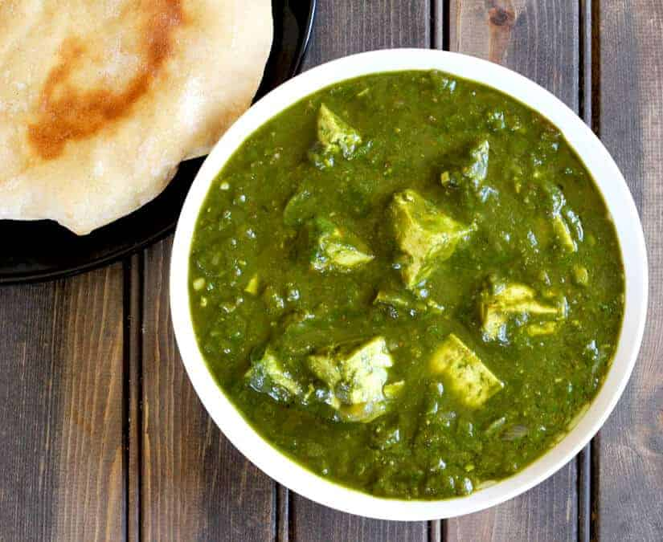

Palak Paneer Recipe
INGREDIENTS
- Fresh Spinach Leaves
- 3 tsp Oil
- 1 tsp Cumin Seeds
- Whole Garam Masala
- 1 1/2 tsp Coriander powder
- 1 tsp Cumin powder
- 1 1/2 tsp Red Chilli powder
- Paneer 250 gms
- 1/2 cup Cream
- 2 Green Chillies
- 1 1/2 tsp Garlic paste
- 1/4 tsp Turmeric powder
INSTRUCTIONS
- Take off stems from spinach leaves. Wash spinach leaves 2 to 3 times in cold water.
- Heat just a cup of water in a pan, add spinach, and cook for 5 minutes.
- Drain off water from spinach and grind to make a smooth puree.
- Heat oil in a pan, add cumin seeds, whole garam spices, garlic paste, and cook till garlic gets a nice golden color.
- Take coriander powder, cumin powder and red chilli powder in a bowl add some water, mix,and make a smooth paste.
- Once garlic gets golden color add the spice paste and cook till oil separates.
- Add green chillies and kasoori methi and cook for a minute.
- Add palak puree, mix and cook for 5 minutes.
- Next add paneer, mix, and cook for 5 minutes.
- Garnish with cream.
